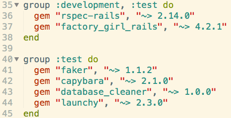

What Is Feature Testing?
Feature testing is using Capybara to test user experience through a web application. Capybara uses its own browser to replicate a user. Use capybara method save_and_open_page in feature tests to debug problems quickly.
Why Feature?
Testing in Rails requires you to think about how long it takes to run a test suite. While feature testing can test all restful routes, it takes much longer than a controller test or model test. For this post, I will run feature tests, but in the future I will break my tests down into controller, model, and feature tests.
Setting up RSpec for Rails
Rails comes bundled with its own version of testing, but I'll use RSpec for feature testing.
The first thing that I run from the console is rails new -T name_of_app. This will create a new rails application without the test folder.
Gemfile
Next I'll setup my gems to allow for Rspec.
